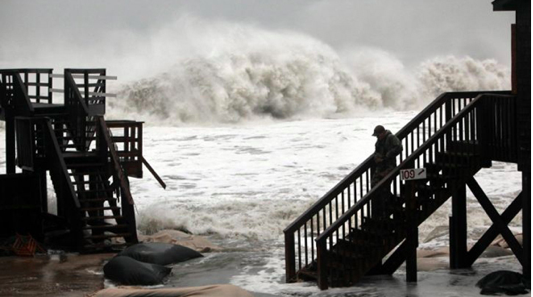
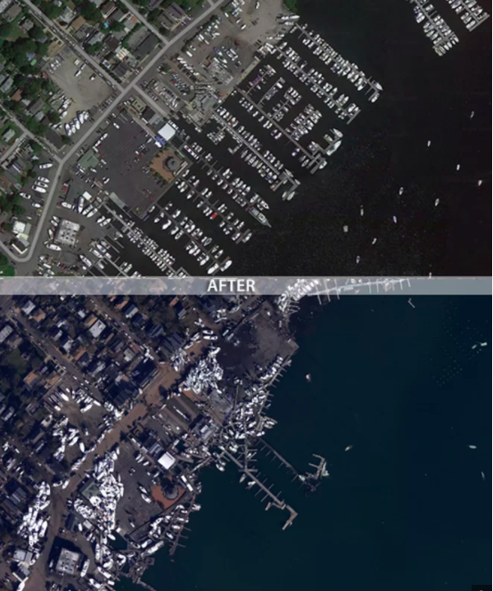
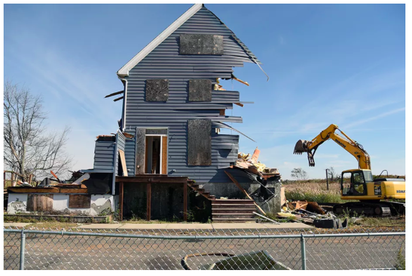
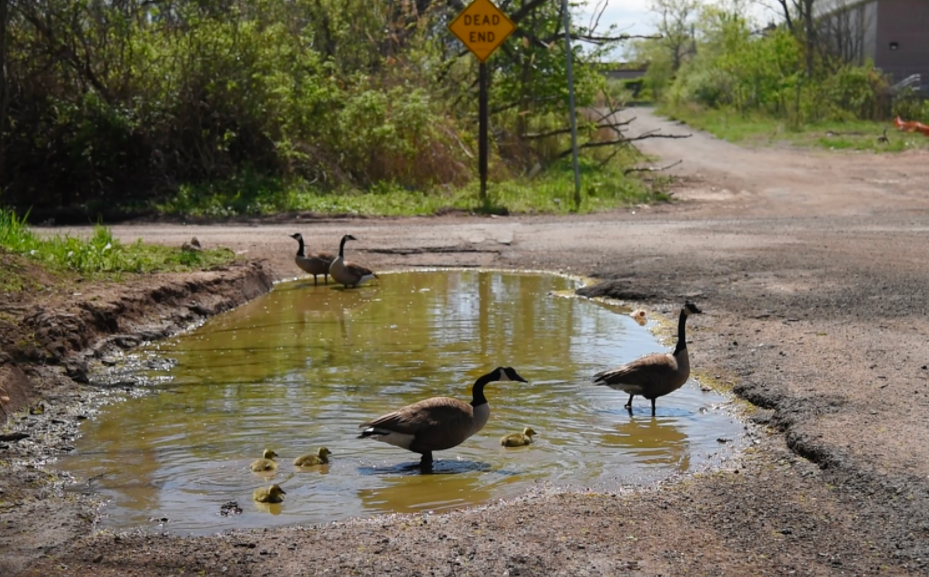

ASSIGNMENT 3- DIGGING DEEPER
Sandy batters the shore.
Moving from their long-time communities once seemed unimaginable to Oakwood Beach residents. But climate change has brought stronger storms and rising sea levels -- a 1.5-foot (0.5 m) rise since 1821 in Staten Island-- and repeated flooding has taken its toll. Sandy was the last straw for many residents, who watched as boats washed up on their streets or had to clamber up furniture as their homes filled with rushing water. Some residents drowned in their homes and cars. As one resident who took the buyout put it: “Everyone loves an ocean view, but it shouldn’t cost you your life. We just wanted to get out and get on with our lives.”

The damage to homes in Oakwood Beach was pervasive.
Some 100 homes in Oakwood were destroyed and others were massively damaged. Most were small bungalows built in the 1960s as summer beach getaways never intended to be inhabited year-round. While residents in other vulnerable neighborhoods hoped to get buyouts, Oakwood and two other neighborhoods in Staten Island, Ocean Breeze and Graham Beach, were chosen by the state in part because they contained these vulnerable bungalows.
OPPOSITE GOVT STRATEGIES The city and state has pursued different recovery strategies for homeowners. A city-led $648 million federally funded program called Build It Back uses contractors to restore damaged homes, elevate homes in flood prone areas or else buy back property. But that program has been beset by numerous budgetary and bureaucratic problems. Some 24,000 New Yorkers have registered for the program, but one in five eligible people still haven’t had their homes repaired. By contrast, New York governor Andrew Cuomo set up a buyout program in Staten Island that pursued a vision of managed retreat through homeowner buyouts, with the goal of returning low-lying flood prone land to wetlands, where it could serve its natural buffer function to protect the coast. The Governor’s Office of Storm Recovery (GOSR) started offering buyouts in early 2014, with a 90% participation rate in Oakwood.
This Oakland home stood empty for many months before it was demolished.
Some homes stood empty for more than a year until they were taken down. But the pace has picked up. In 2016, for example, 160 houses were demolished, four times the number taken down up until then. Afterwards each house is demolished, specially designed mix of wetlands seed is spread out over the empty land, transforming it into meadows of shrubs and flowers.
Ducks and geese have moved into Oakwood, and don't get spooked by the ongoing demolitions of homes.
Oakwood Beach has changed more radically than any other area impacted by Sandy. The buyout program has transformed this former bungalow beach community into a marshland paradise for turkeys, geese, deer and opossum.